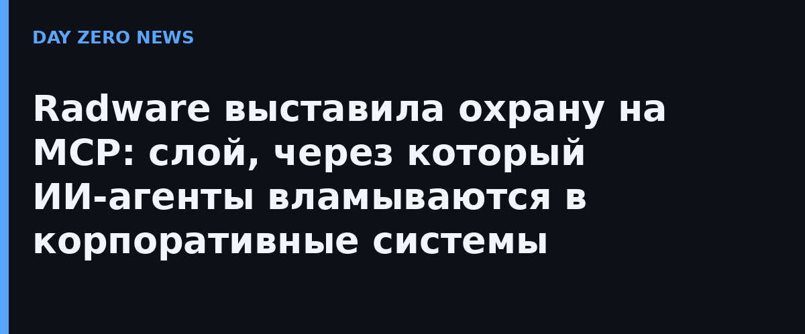

Компания Radware, которая занимается защитой приложений и DDoS-обороной, представила MCP Server Protection — решение, построенное вокруг Model Context Protocol, стандартного способаподключать ИИ-агентов с корпоративными приложениями, данными и рабочими процессами. Идея простая: пока все обсуждают, что скажет и что сломает сама модель, критичная дыра находится этажом ниже — на сервере MCP, через который агент вообще получает доступ к живым системам.
Свежий опрос Stacklok «State of Model Context Protocol in Software 2026» показывает: около половины опрошенных софтверных компаний уже используют MCP в продакшене, а 19% — широко. То есть протокол перестал быть экспериментом, а привычные веб-защита и DDoS-фильтры этот слой просто не понимают: они не видят, какой инструмент вызвал агент и с какими полномочиями.
Первое — инвентарь и прозрачность: какие MCP-серверы развернуты по всей организации, какие инструменты и ресурсы они отдают наружу, кто из агентов их дергает и как общается между собой. Второе — защита от специфичных для протокола атак: злоупотребление MCP, атаки на аутентификацию, перебор инструментов и ресурсов, несанкционированные вызовы, «затопление» инструментов запросами и отказ в обслуживании, устроенный самим ИИ. Третье — поведенческий надзор: анализ идентификаторов агентов, паттернов вызовов и аномалий потребления ресурсов. Работает в публичном и частном облаке, Kubernetes и обычных дата-центрах — как облачный сервис или как дополнение к локальным платформам Alteon и DefensePro.
Защита MCP становится в один ряд с Radware Agentic AI Protection и LLM Firewall — недавно компания запустила ещё и Agent Trust Management для управления доверием к агентам. Видно, как выстраивается целый забор вокруг агентского стека: сами агенты, модель, а теперь и интеграционный слой между ними и бизнесом. «MCP стремительно становится критичным слоем интеграции, но каждое новое подключение расширяет поверхность атаки», — резюмирует технический директор Radware Давид Авив.
Для всех, кто пускает агентов в прод, вывод прикладной: инвентаризация MCP-серверов — тот же «shadow IT», только с доступом к вашим базам и тикет-системам. Прежде чем защищать, стоит хотя бы узнать, сколько серверов MCP у вас уже стоит.